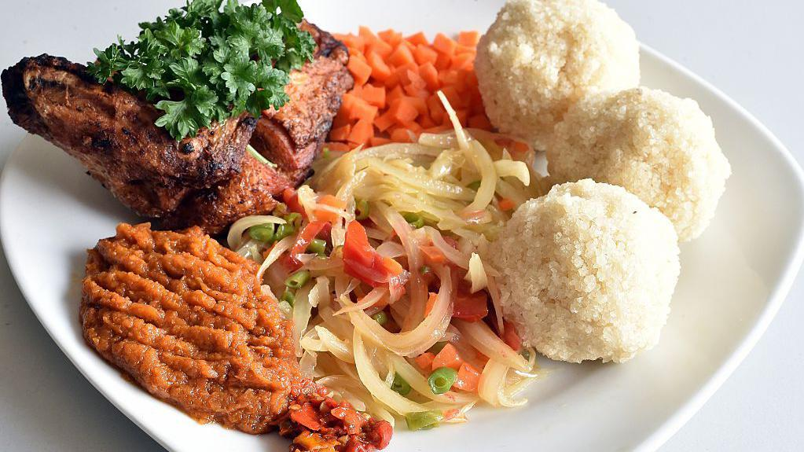

Far away, some 5,000+ miles from Provo, lies the vibrant country of Côte d'Ivoire. This West African nation is known for its rich traditions, lively music and dance, and wide cultural diversity. With more than 60 ethnic groups living between the tropical rainforest in the south and the Guinean savanna in the north, Côte d'Ivoire and its economic capital, Abidjan, reflect a dynamic blend of history, language, and everyday life.
Côte d'Ivoire is known for its vibrant music, flavorful food, deep sense of community, and rich mix of traditions. From colorful markets in Abidjan to local dances, languages, and celebrations across the country, Ivorian culture reflects both diversity and strong national pride.
